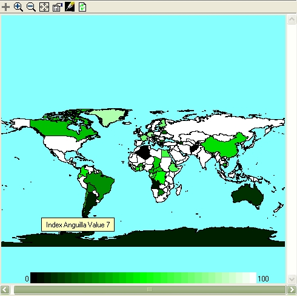

The polygon diagram colours a collection of polygons according to the value of a specified variable. It is typically implemented using a multiple-instance fixed membership submodel. Each instance of the submodel is given a different index, often using the index function.
The co-ordinates of the polygon outline can be sourced from the model itself or from a dxf file. If from the model the multi-instance submodel must include an array of x co-ordinates and a seperate array of y co-ordinates to describe the outline. In the example model Spatial diffsion over a hexagonal grid the multi-instance submodel "Hexagon" contains the multi-instance submodel "borders" which provides the co-ordinates for the polygon borders. Of course the polygons can be irregular such as the outlines of countries. The polgygons would then represent a multi-instance submodel which in turn represented countries of the world.

The colours corresponding the high, middle and low values can be selected using the properties dialogue box. The intermediate colours are calculated as shades of these. The window is resizable, but it is necessary to use the zoom in and out buttons to alter the size of the map.
In: Contents >> Running
models >> Working
with helpers